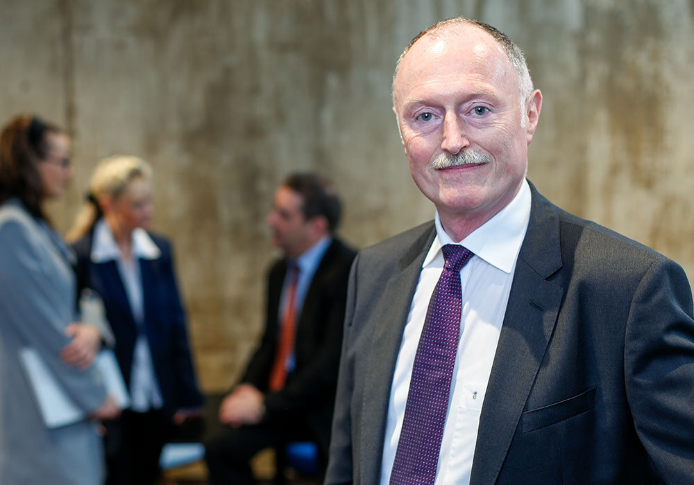
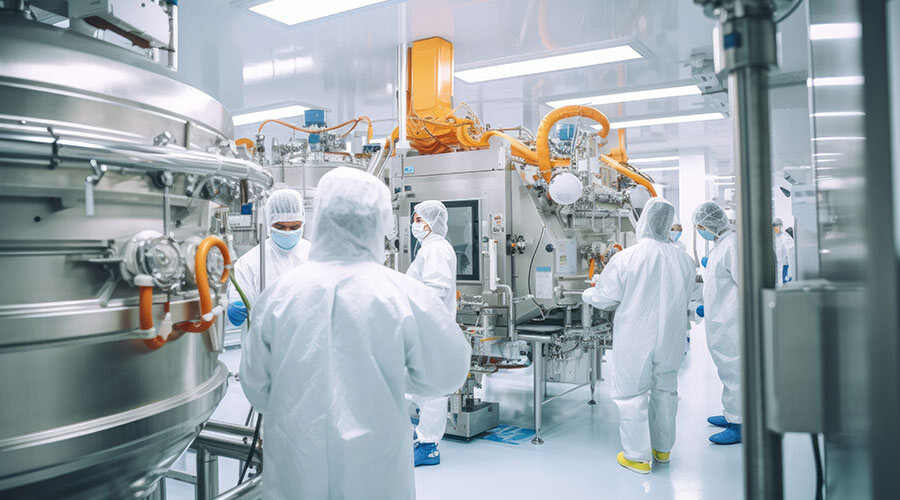
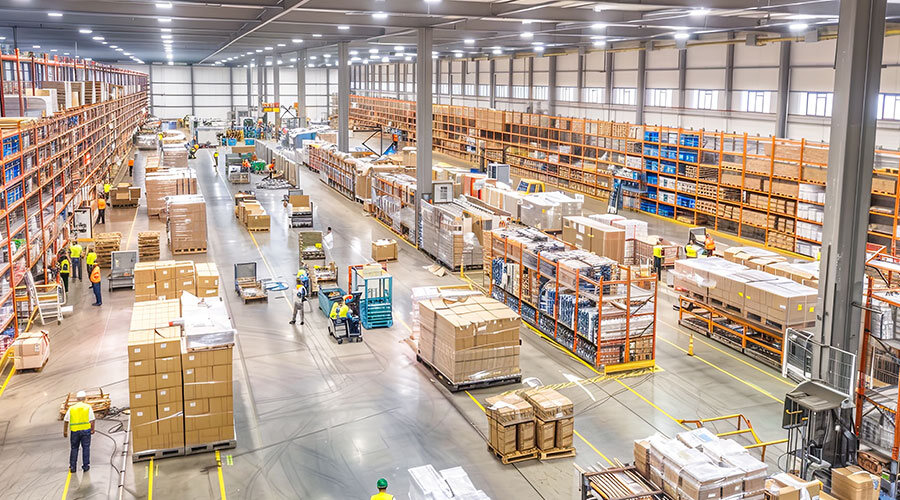
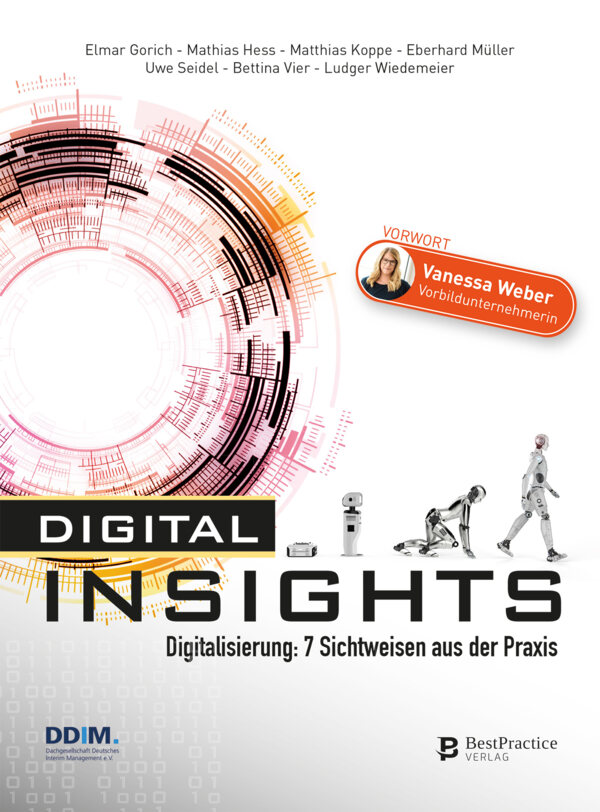

Unternehmen verändern, Veränderungen unternehmen.
Als Wegbereiter, Vertrauter, Transformator gestalte ich Veränderungen im General Management und in den Bereichen Einkauf, SCM und Logistik.

Angaben aus den Fallbeispielen auf dr-mueller-interim.de.
Ich bringe Unternehmen auf die nächste Erfolgsstufe.
Einkauf optimieren
Bestände um 30-50 % gesenkt
Supply Chain Management und Logistik voranbringen
Durchlaufzeiten signifikant verkürzt
Potenziale von Digitalisierung und Industrie 4.0 nutzen
Innovationen: Neue digitale Produkte und Services, Schlanke und schnelle Prozesse führen zu höherer Kundenzufriedenheit und Schnelligkeit sowie Kosteneinsparungen
04Profitabilität verbessern
Kosten für Material und Dienstleistungen über 10-50 % gesenkt
Starkes Wachstum nachhaltig umsetzen
Höhere Marge durch Nutzengenerierung beim Kunden bzw. dessen Kunden, Modularer skalierbarer Wachstumsplan mit Risikoschranken
06Strategie und Geschäftsmodell weiterentwickeln
Höhere Marge durch Nutzengenerierung beim Kunden bzw. dessen Kunden, Neue Technologien und Produkte sowie neue Dienstleistungen

Ganzheitlich, nachhaltig, skalierbar.
Über die reine Wertschöpfungskette hinaus denke ich im Kundennutzen. Mein Ziel ist die Transformation des Gesamtunternehmens.
Ich bin promovierter Ingenieur und war zu Beginn meiner Berufslaufbahn in der Forschung (Fraunhofer Institut) national und international tätig. 1997 folgten unterschiedliche Stationen in Festanstellungen bei global agierenden Unternehmen. Seit 2007 bin ich erfolgreich als Interim Manager aktiv. Als General Manager oder in einem meiner Schwerpunktbereiche Einkauf, SCM und Logistik übernehme ich Tätigkeiten als CEO, CRO, CPO und CDO sowie als Projektleiter für Change- und Growth-Anlässe.
Zuletzt im Einsatz.
Projektleiter „Aufbau nachhaltige, klimafreundliche Outbound-Logistik“
Global agierendes deutsches Familienunternehmen · Anbieter von Hygiene-Lösungen für Profis

Head of Supply Chain / Operations (Einkauf, SCM, Verpackungsplanung, Produktion & Logistik, QM)
Global agierendes deutsches Familienunternehmen · Pharmazie und Kosmetik

Fachbereichsleiter Logistik / Zentrallager Europa (Restrukturierungsprojekt)
Global agierendes deutsches Familienunternehmen · Metallverarbeitung und Maschinenbau
Wo ich gearbeitet habe.
- Automotive
- Windindustrie
- Chemie / Pharmazie
- Gesundheitsbranche / Fachhandel / Medizintechnik
- Maschinenbau
- Solarindustrie
- Elektrotechnik / Elektronik
- Metallverarbeitung
Was ich übernehme.
- Leiter Einkauf
- Leiter Logistik
- Leiter Supply Chain Management
- Restrukturierer
- Leiter Business Unit / Geschäftsleitung

Digitalisierung: 7 Sichtweisen aus der Praxis.
Mitautor des Buchs „Digital Insights“, dazu der Podcast „digital talks“ und Fachbeiträge zu Collaborative Management, Delta-Modell und Sourcing-Strategien.
Buch, Podcast und Beiträge


Lernen wir uns kennen.
Sie möchten mich besser kennenlernen. Gerne stehe ich Ihnen für einen Gesprächstermin zur Verfügung.
Gesprächstermin anfragenHeinrich-Delp-Str. 194
64297 Darmstadt